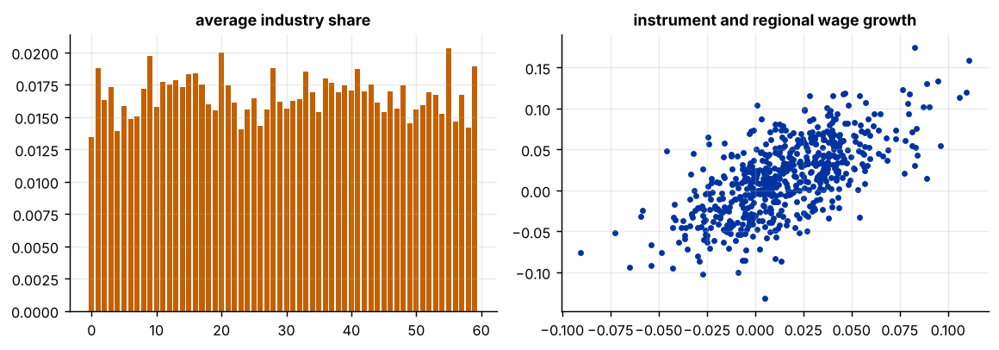
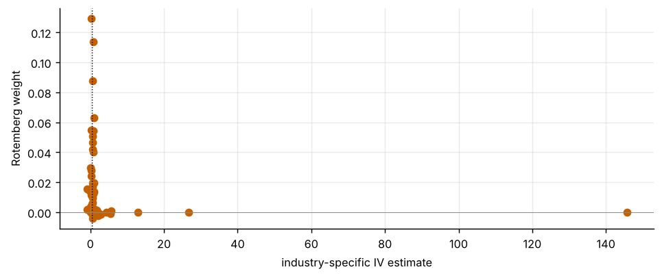

Step 1The question and the identification logic
A region's wage growth \(x_\ell\) is correlated with unobserved local demand shocks, so OLS of regional employment growth \(y_\ell\) on \(x_\ell\) is biased. The shift-share instrument uses only the variation that comes from national industry shocks \(g_n\) combined with each region's initial industry shares \(s_{\ell n}\):
There are two ways to justify it. Share exogeneity (Goldsmith-Pinkham, Sorkin and Swift 2020): the initial shares are uncorrelated with later unobserved shocks, and the shares are the instruments. Shock exogeneity (Borusyak, Hull and Jaravel 2022): the national shocks \(g_n\) are as good as randomly assigned across industries, and the shares are exposure weights. Say which one your paper relies on, because the diagnostics differ.
| Symbol | Variable | Definition |
|---|---|---|
| \(y_\ell\) | dy |
change in log regional employment |
| \(x_\ell\) | dx |
change in log regional wage |
| \(s_{\ell n}\) | share |
initial industry shares (60 industries) |
| \(g_n\) | shock |
national industry shocks |
| \(\beta\) | true effect, set to 0.5 in the simulation |
Before you estimate anything
Decide which assumption you are making and why. For shock exogeneity you need many industries and no single industry dominating (the effective number of industries should be large). For share exogeneity you need to argue why initial industry mix is unrelated to later local shocks. Exclude regions' own contribution to the national shock (leave-one-out shocks) when regions are large.
How to write it: design
We instrument the change in regional wages with a shift-share instrument, the average of national industry shocks weighted by the region's initial employment shares. Identification relies on the shocks being as good as randomly assigned across industries conditional on the weights (Borusyak, Hull and Jaravel 2022). We report Rotemberg weights to show which industries drive the estimate, shock-level (exposure-robust) standard errors, and sensitivity to dropping the highest-weight industries.
Step 2Simulate the data
import warnings; warnings.filterwarnings("ignore")
import numpy as np, pandas as pd, statsmodels.api as sm
import matplotlib.pyplot as plt
rng = np.random.default_rng(2024)
L, N, beta = 600, 60, 0.5
share = rng.dirichlet(np.ones(N) * .15, size=L) # regions specialise in a few industries
shock = rng.normal(0.03, 0.08, N) # national industry shocks, independent of local errors
B = share @ shock # the shift-share instrument
c = rng.normal(0, 1, L) # unobserved local demand shock
dx = 1.0 * B + 0.03 * c + rng.normal(0, 0.02, L) # wage growth: partly driven by the instrument, partly by c
dy = beta * dx + 0.04 * c + rng.normal(0, 0.02, L) # employment growth: c affects it too, so OLS is biased
dy_pre = 0.04 * c + rng.normal(0, 0.02, L) # pre-period outcome (no effect of the shocks)
print(f"{L} regions, {N} industries; true effect beta = {beta}")
print(f"Industry shocks: mean {shock.mean():.3f}, sd {shock.std():.3f}; instrument sd across regions {B.std():.4f}")
sn = share.sum(0) / share.sum()
print(f"Industry weights (average share): largest {sn.max():.2f}; effective number of industries {1 / np.sum(sn ** 2):.1f}")
fig, ax = plt.subplots(1, 2, figsize=(9, 3.2))
ax[0].bar(range(N), sn, color="#c46000"); ax[0].set_title("average industry share"); ax[1].scatter(B, dx, s=8, color="#0033a0"); ax[1].set_title("instrument and regional wage growth")
plt.tight_layout()600 regions, 60 industries; true effect beta = 0.5 Industry shocks: mean 0.014, sd 0.096; instrument sd across regions 0.0297 Industry weights (average share): largest 0.02; effective number of industries 59.5

How to read it
Regions specialise in a few industries each, and across the 60 industries no single one is large: the biggest has 2% of the average share and the effective number of industries is 59.5. That matters for shock exogeneity, which needs many small shocks, not a few large ones. The instrument varies a lot across regions (standard deviation 0.030) and moves with regional wage growth. The data are simulated, so these numbers describe the design, not a real economy.
Step 3First stage, OLS and 2SLS
def tsls(y, x, z, W=None):
n = len(y); W = np.ones((n, 1)) if W is None else np.column_stack([np.ones(n), W])
Z = np.column_stack([W, z]); X = np.column_stack([W, x])
xh = Z @ np.linalg.lstsq(Z, X, rcond=None)[0]
b = np.linalg.lstsq(xh, y, rcond=None)[0]; u = y - X @ b
V = np.linalg.inv(xh.T @ xh) @ (xh.T * u ** 2) @ xh @ np.linalg.inv(xh.T @ xh)
return b[-1], np.sqrt(V[-1, -1])
fs = sm.OLS(dx, sm.add_constant(B)).fit(cov_type="HC1")
print(f"First stage: slope {fs.params[1]:.2f} (t = {fs.tvalues[1]:.1f}), F = {fs.tvalues[1] ** 2:.0f}, R2 = {fs.rsquared:.2f}")
ols = sm.OLS(dy, sm.add_constant(dx)).fit(cov_type="HC1")
b_iv, se_iv = tsls(dy, dx, B)
rf = sm.OLS(dy, sm.add_constant(B)).fit(cov_type="HC1")
print(f"OLS: {ols.params[1]:.3f} (s.e. {ols.bse[1]:.3f}) [true value {beta}]")
print(f"2SLS with the shift-share instrument: {b_iv:.3f} (conventional robust s.e. {se_iv:.3f})")
print(f"Reduced form: {rf.params[1]:.3f} (s.e. {rf.bse[1]:.3f}); ratio to the first stage {rf.params[1] / fs.params[1]:.3f}")
print(f"95% interval for 2SLS (conventional): [{b_iv - 1.96 * se_iv:.3f}, {b_iv + 1.96 * se_iv:.3f}]; covers the truth: {abs(b_iv - beta) < 1.96 * se_iv}")First stage: slope 1.03 (t = 22.1), F = 487, R2 = 0.44 OLS: 1.000 (s.e. 0.031) [true value 0.5] 2SLS with the shift-share instrument: 0.503 (conventional robust s.e. 0.058) Reduced form: 0.516 (s.e. 0.078); ratio to the first stage 0.503 95% interval for 2SLS (conventional): [0.388, 0.617]; covers the truth: True
How to read it
The first stage is strong (slope 1.03, F = 487, R² = 0.44). OLS gives 1.00, double the true value of 0.5, because the unobserved local shock raises both wages and employment. 2SLS with the shift-share instrument gives 0.503 (s.e. 0.058), with an interval of 0.39 to 0.62 that covers the truth. The reduced form divided by the first stage gives the same number, which is the Wald logic of the estimator.
Step 4Which industries drive the estimate? Rotemberg weights
# just-identified estimate using each industry share as the only instrument, and the Rotemberg weights of Goldsmith-Pinkham et al.
Zs = share - share.mean(0) # demeaned shares (the constant is partialled out)
xt = dx - dx.mean(); yt = dy - dy.mean()
xh = Zs @ np.linalg.lstsq(Zs, xt, rcond=None)[0] # first-stage fitted values using all shares
b_n = (Zs.T @ yt) / (Zs.T @ xt) # per-industry IV estimates
alpha = shock * (Zs.T @ xt) # contribution of industry n (g_n times its first-stage covariance)
alpha = alpha / alpha.sum() # Rotemberg weights (sum to one; can be negative)
rot = pd.DataFrame({"weight": alpha, "shock": shock, "industry estimate": b_n}, index=[f"industry {i + 1}" for i in range(N)])
top = rot.reindex(rot.weight.abs().sort_values(ascending=False).index).head(6)
print("Industries with the largest absolute Rotemberg weights:")
print(top.round(3).to_string())
print(f"\nShare of weight on the top 5 industries: {rot.weight.abs().sort_values(ascending=False).head(5).sum() / rot.weight.abs().sum():.0%}; negative weights: {(rot.weight < 0).sum()} industries ({rot.weight[rot.weight < 0].sum():.3f} of total weight)")
print(f"Weighted sum of industry estimates (just-identified, the Bartik estimate with the shock weights): {np.sum(alpha * b_n):.3f}")
fig, ax = plt.subplots(figsize=(7.5, 3.2))
ax.scatter(rot["industry estimate"], rot.weight, s=30, color="#c46000"); ax.axvline(beta, color="#000", lw=.8, ls=":"); ax.axhline(0, color="#888", lw=.5)
ax.set_xlabel("industry-specific IV estimate"); ax.set_ylabel("Rotemberg weight"); plt.tight_layout()Industries with the largest absolute Rotemberg weights:
weight shock industry estimate
industry 53 0.129 0.300 0.244
industry 46 0.114 -0.246 0.830
industry 17 0.088 0.169 0.696
industry 12 0.063 0.152 0.944
industry 23 0.055 0.198 0.185
industry 7 0.054 0.160 0.824
Share of weight on the top 5 industries: 43%; negative weights: 13 industries (-0.018 of total weight)
Weighted sum of industry estimates (just-identified, the Bartik estimate with the shock weights): 0.503
How to read it
The estimate is a weighted average of 60 industry-specific estimates, and no industry dominates: the top five carry 43% of the absolute weight, with 13 industries having small negative weights (−0.018 in total). The individual industry estimates range widely (for the top six, 0.19 to 0.94) because each uses only one share, so they are noisy. In a real paper, look at whether the high-weight industries are ones for which the share exogeneity assumption is credible, and whether their individual estimates agree.
Step 5Inference that respects the shock structure
# Borusyak-Hull-Jaravel: the same estimate from an industry-level regression, with standard errors that treat the shocks as the random variable
s_n = share.sum(0) # industry weights
y_n = (share * dy[:, None]).sum(0) / s_n; x_n = (share * dx[:, None]).sum(0) / s_n # exposure-weighted averages of the outcomes and endogenous variable
Wn = np.sqrt(s_n)
Zm = np.column_stack([np.ones(N), shock]) * Wn[:, None]; Xm = np.column_stack([np.ones(N), x_n]) * Wn[:, None]; ym = y_n * Wn
xh = Zm @ np.linalg.lstsq(Zm, Xm, rcond=None)[0]; bb = np.linalg.lstsq(xh, ym, rcond=None)[0]; u = ym - Xm @ bb
V = np.linalg.inv(xh.T @ xh) @ (xh.T * u ** 2) @ xh @ np.linalg.inv(xh.T @ xh)
b_bhj, se_bhj = bb[1], np.sqrt(V[1, 1])
print(f"Industry-level IV estimate: {b_bhj:.3f} (shock-level robust s.e. {se_bhj:.3f})")
print(f"Region-level 2SLS: {b_iv:.3f} (conventional robust s.e. {se_iv:.3f})")
print(f"The exposure-robust standard error is {se_bhj / se_iv:.1f} times the conventional one.")
# a simulation-based check of the coverage of both intervals
def one(seed):
r = np.random.default_rng(seed); sh = r.normal(0.03, 0.08, N); Bb = share @ sh
xx = 1.0 * Bb + 0.03 * c + r.normal(0, 0.02, L); yy = beta * xx + 0.04 * c + r.normal(0, 0.02, L)
b, se = tsls(yy, xx, Bb)
xn = (share * xx[:, None]).sum(0) / s_n; yn = (share * yy[:, None]).sum(0) / s_n
Zm_ = np.column_stack([np.ones(N), sh]) * Wn[:, None]; Xm_ = np.column_stack([np.ones(N), xn]) * Wn[:, None]; ym_ = yn * Wn
xh_ = Zm_ @ np.linalg.lstsq(Zm_, Xm_, rcond=None)[0]; b2 = np.linalg.lstsq(xh_, ym_, rcond=None)[0]; u_ = ym_ - Xm_ @ b2
V_ = np.linalg.inv(xh_.T @ xh_) @ (xh_.T * u_ ** 2) @ xh_ @ np.linalg.inv(xh_.T @ xh_)
return b, se, b2[1], np.sqrt(V_[1, 1])
sim = np.array([one(s) for s in range(400)])
cov_conv = np.mean(np.abs(sim[:, 0] - beta) < 1.96 * sim[:, 1]); cov_bhj = np.mean(np.abs(sim[:, 2] - beta) < 1.96 * sim[:, 3])
print(f"\nCoverage of nominal 95% intervals over 400 new draws of the shocks (same shares and local shocks): conventional {cov_conv:.0%}, shock-level {cov_bhj:.0%}")Industry-level IV estimate: 0.503 (shock-level robust s.e. 0.075) Region-level 2SLS: 0.503 (conventional robust s.e. 0.058) The exposure-robust standard error is 1.3 times the conventional one. Coverage of nominal 95% intervals over 400 new draws of the shocks (same shares and local shocks): conventional 96%, shock-level 94%
How to read it
The exposure-robust (industry-level) standard error is 0.075, about 1.3 times the conventional 0.058, which would widen the interval. In this simulation the local errors are independent across regions, so the conventional interval also covers well (96% over 400 draws, against 94% for the shock-level one). That is a feature of the design: with real data, regions that share industries have correlated residuals and the conventional standard errors can be far too small, so the shock-level standard error is the safe choice.
Step 6Diagnostics: pre-trend, shock balance and leave-one-out
# 1. pre-trend: the instrument should not predict the pre-period outcome
pt = sm.OLS(dy_pre, sm.add_constant(B)).fit(cov_type="HC1")
print(f"Pre-period outcome on the instrument: {pt.params[1]:.3f} (t = {pt.tvalues[1]:.1f})")
# 2. shock balance: the shocks should be unrelated to industry characteristics (here, an industry-level confounder built as a pure noise variable)
char = rng.normal(0, 1, N)
bal = sm.WLS(shock, sm.add_constant(char), weights=s_n).fit(cov_type="HC1")
print(f"Shock on an industry characteristic (weighted): {bal.params[1]:.3f} (t = {bal.tvalues[1]:.1f})")
# 3. leave-one-out: drop the highest-weight industries from the instrument and re-estimate
order = rot.weight.abs().sort_values(ascending=False).index.map(lambda s: int(s.split()[1]) - 1)
rows = []
for k in [0, 1, 3, 5]:
keep = [i for i in range(N) if i not in list(order[:k])]
Bk = share[:, keep] @ shock[keep]
rows.append((f"drop top {k} industries" if k else "all industries", tsls(dy, dx, Bk)[0], tsls(dy, dx, Bk)[1]))
print(pd.DataFrame(rows, columns=["instrument", "2SLS", "s.e."]).round(3).to_string(index=False))
# 4. a violation: let the shocks correlate with a common component of the local shocks, and see the bias
c_ind = rng.normal(0, 1, N); shock_bad = shock + 0.04 * c_ind; B_bad = share @ shock_bad
cl = share @ c_ind # regional exposure to the confounded component
dx_b = 1.0 * B_bad + 0.03 * c + 0.05 * cl + rng.normal(0, 0.02, L); dy_b = beta * dx_b + 0.04 * c + 0.05 * cl + rng.normal(0, 0.02, L)
print(f"\nWhen shocks are correlated with industry-level demand conditions: 2SLS {tsls(dy_b, dx_b, B_bad)[0]:.3f} (true {beta})")Pre-period outcome on the instrument: 0.068 (t = 1.2)
Shock on an industry characteristic (weighted): -0.019 (t = -1.6)
instrument 2SLS s.e.
all industries 0.503 0.058
drop top 1 industries 0.541 0.060
drop top 3 industries 0.472 0.072
drop top 5 industries 0.446 0.083
When shocks are correlated with industry-level demand conditions: 2SLS 0.685 (true 0.5)How to read it
The instrument does not predict the pre-period outcome (0.07, t = 1.2) and the shocks are unrelated to a random industry characteristic (t = −1.6). Dropping the highest-weight industries moves the estimate between 0.45 and 0.54 while the standard errors rise from 0.058 to 0.083, so no single industry drives the result. The last line shows what a violation does: when the shocks are correlated with industry-level conditions that also raise local outcomes, 2SLS rises to 0.69 against the true 0.5, and the usual diagnostics would not flag it automatically. A pre-trend test is only informative if the confounder also acts in the pre-period.
How to write it: results
Instrumenting regional wage growth with a shift-share instrument gives an effect on employment of 0.50 (s.e. 0.058; exposure-robust s.e. 0.075), against an OLS estimate of 1.00 that is biased by local demand shocks. The first stage is strong (F = 487). The Rotemberg weights are spread over many industries (the top five carry 43% of the absolute weight), the estimate stays between 0.45 and 0.54 when the highest-weight industries are dropped, and the instrument does not predict the pre-period outcome. The identifying assumption is that the national shocks are uncorrelated with local unobserved shocks, which the diagnostics cannot prove: correlation between the shocks and industry-level conditions would raise the estimate to 0.69 in our simulation. (These results use simulated data.)
Step 7What to report in the paper
| Item | What to show |
|---|---|
| Identification | share or shock exogeneity, and the argument for it |
| Instrument | how it is built, leave-one-out shocks, effective number of industries |
| First stage | the coefficient and the F statistic |
| Rotemberg weights | the top industries, and the estimates that use them |
| Inference | exposure-robust standard errors (not only region-clustered ones) |
| Diagnostics | pre-trend, shock balance, leave-one-out sensitivity |
Common mistakes
- Conventional standard errors. Regions that share industry exposure have correlated residuals, so region-robust standard errors can be much too small. Use shock-level or exposure-robust inference.
- No statement of which exogeneity assumption. The checks for share exogeneity (pre-trends, Rotemberg weights) and for shock exogeneity (shock balance, many shocks) differ.
- One industry doing all the work. Report the Rotemberg weights and test dropping the top industries.
- Shocks that include the region itself. Use leave-one-out national shocks when a region is a large part of the national industry.
- Weak first stage or negative weights unreported. Show the F statistic and the share of negative weights.
- Treating the simulation as evidence. Simulated data show how a method behaves. In your own paper, the argument for exogeneity must come from the setting.